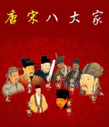

唐宋八大家，是唐、宋两代八个散文大家的合称，即唐代的韩愈、柳宗元，宋代的欧阳修、苏洵、苏轼、苏辙、曾巩、王安石。
明初，朱右采录唐代的韩愈、柳宗元，宋代的欧阳修、苏洵、苏轼、苏辙、曾巩、王安石八家的古文编成《八先生文集》，八大家之名始于此；明中叶唐顺之所编的《文编》，仅取唐宋这八位的文章，其它作家的文章一律不收，为唐宋八大家名称的定型和流传起了一定的作用；不久，茅坤承朱右、唐顺之二人之说，辑录八家散文为《唐宋八大家文钞》，此书流传极广，“唐宋八大家”之名由此益显于世。
